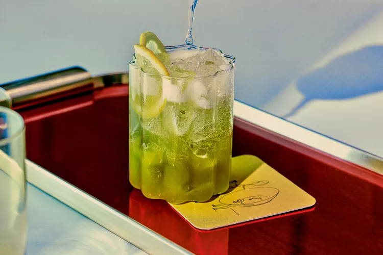

6. Matcha Highball
A little matcha goes a long way in this simple, festive highball recipe.

A trip to Japan inspired Denver bartender Jason Patz to combine earthy, slightly grassy matcha with Japanese whisky.
He rounds it out with lemon juice, honey syrup, and chilled club soda for a fizzy delight.
Ingredients
2 ounces Japanese whisky
1/2 ounce freshly squeezed lemon juice
1/2 ounce honey syrup
1/4 teaspoon matcha powder
4 ounces chilled club soda
1 lemon wheel, for garnish
How to prepare
Step 1
- Add whisky, lemon juice, honey syrup, and matcha into an ice-filled cocktail shaker. Shake vigorously.
Step 2
- Pour into a chilled, ice-filled Collins glass. Pour the club soda into the shaker, swirl around to rinse, then stir into the glass.
Step 3
- Garnish with the lemon wheel.
Helpful Tips
- Matcha powder tends to clump when mixed with liquid; to loosen any that’s
stuck to the side of the shaker, swirl the club soda in the shaker before pouring it into the glass.
Enjoy your Matcha Whiskey Highball!